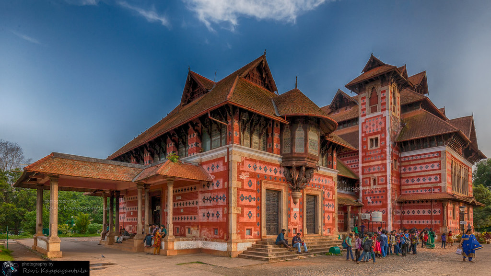
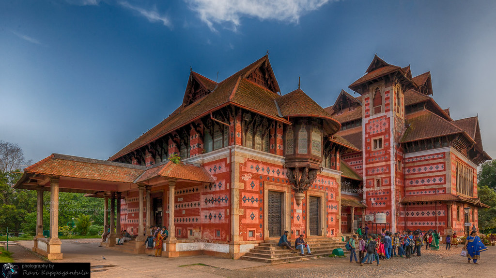

A city adorned with lush greenery, tranquil backwaters and exquisite beaches is Thiruvananthapuram, the capital city and cultural hub of God's Own Country.
This "Evergreen City of India" is located in the southwestern tip of Indian mainland and lies straddled by the Arabian Sea in the west and the magnificent highlands of Western Ghats in the east.
The city is named after Ananda Padmanabha or Lord Vishnu, owing to the great legacy of the erstwhile rulers of Travancore who dedicated their Kingdom to Lord Padmanabha, the presiding deity of Sri Padmanabhaswamy Temple.
Apart from the incredible beauty of the many internationally renowned beaches and delightful picnic spots, the city is also home to many historical monuments and temples. Start out a journey to this clean and green city of Kerala, explore and revel in its mystic charm.
Places to Visit
Padmanabhaswamy Temple
Sri Padmanabhaswamy temple situated at the heart of the city is one of the most popular attractions in Thiruvananthapuram. Constructed in Dravidian style this temple worth a visit. The temple has a seven story carved gopuram.
Ponmudi Hill Station
Ponmudi, the beautiful hill station situated at a distance of 61 km from Thiruvananthapuram. Ponmudi is at an altitude of about 1000m from the sea level. The golden valleys, tea estates, and cottages in these serene hill station will be an unforgettable experience.
Kovalam Beach
Kovalam, an internationally renowned beach is situated just 16 km away from Thiruvananthapuram. Kovalam is a shallow beach with three adjacent beaches.